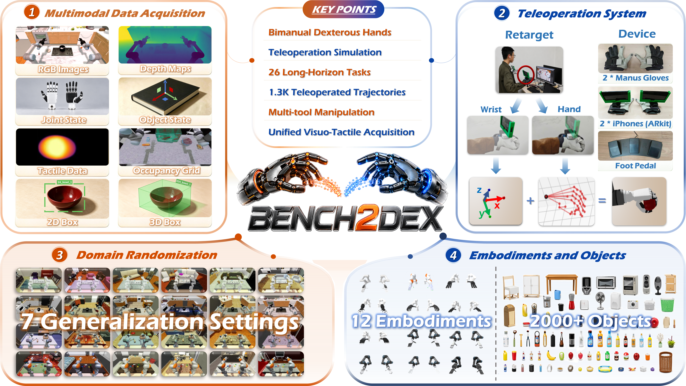
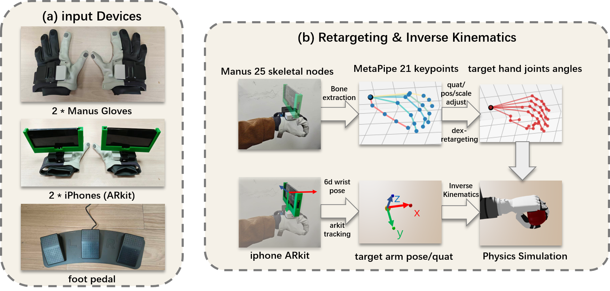
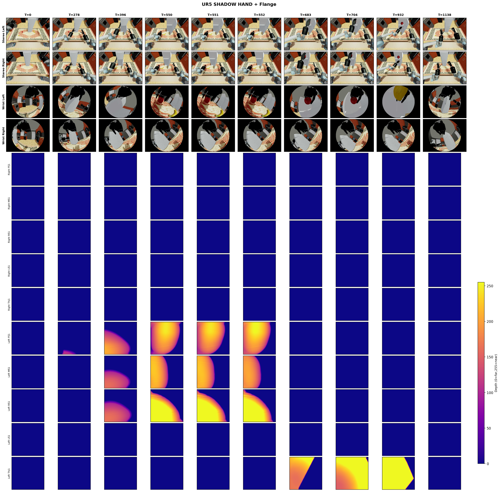

Bench2Dex
Benchmarking Visuo-Tactile Bimanual Dexterous Manipulation
Across Dexterous Hands
1Shanghai Jiao Tong University · 2Fudan University · 3The University of Hong Kong · 4Inspire Robots
5Zhongguancun Academy · 6COWARobot Co. Ltd · 7Nanyang Technological University
* Core contribution · † Corresponding authors
Abstract
A controlled platform for visuo-tactile learning across dexterous hands.
Tactile sensing provides contact information that can be difficult to infer from vision alone, but tactile hardware for dexterous hands has not converged to a common design. Dexterous hands differ in finger structure, contact surfaces, and sensor layouts, while simulated tactile signals still differ from measurements produced by physical sensors. These factors make it difficult to study visuo-tactile manipulation across diverse dexterous hands within a consistent experimental setting. We present Bench2Dex, a simulation benchmark for visuo-tactile bimanual manipulation across 12 dexterous hands. We adapt existing robot models with a shared simulated tactile interface that converts local contact geometry into image-like tactile observations. The interface provides a consistent observation format across different hand morphologies without attempting to reproduce the output of a specific physical tactile sensor. Bench2Dex includes 26 bimanual manipulation tasks that involve tool use, articulated-object interaction, and multi-stage manipulation, together with about 1.3K human-teleoperated demonstrations. The benchmark provides synchronized visual, tactile, proprioceptive, action, and object-state observations, together with executable task metrics. For robustness, we group seven perturbation types into invariance axis, where the correct action does not change, and equivariance axis, where the correct action changes together with the perturbation. We evaluate ACT, Diffusion Policy, π₀.₅, and GR00T N1.5 on Bench2Dex and report their performance and failure modes. Bench2Dex is meant as a platform for studying visuo-tactile learning across dexterous hands. It does not assume that simulated tactile observations can replace real tactile sensing; it offers a shared setting for algorithm development while tactile hardware and simulation models are still evolving. All code for training, inference, and teleoperation is open-sourced.
System Overview
One pipeline: teleoperation → multimodal acquisition → shared visuo-tactile representation → evaluation.

Comparison · Evaluated Baselines
Comparison with representative manipulation benchmarks.
Most benchmarks optimize a single axis — many tasks with one gripper, many demonstrations with one hand, or rich contact with one morphology. BENCH2DEX is built so that long-horizon bimanual dexterity, embodiment diversity, synchronized multimodal sensing, and diagnostic generalization are evaluated together.
| Benchmark | Task Num | Embodiment | Tool/Device Use | Dexterous Hand | Teleoperation | Vision-Based Tactile | Articulated |
|---|---|---|---|---|---|---|---|
| LIBERO | 130 | 1 | ✗ | ✗ | ✓ | ✗ | ✓ |
| RLBench2 | 13 | 1 | ✓ | ✗ | ✗ | ✗ | ✓ |
| RoboCasa | 100 | 1 | ✓ | ✗ | ✓ | ✗ | ✓ |
| DROID | 86 | 1 | ✗ | ✗ | ✓ | ✗ | ✗ |
| DexMimicGen | 9 | 3 | ✗ | ✓ | ✓ | ✗ | ✓ |
| RealMirror | 5 | 1 | ✗ | ✓ | ✓ | ✗ | ✓ |
| RoboTwin 2.0 | 50 | 5 | ✓ | ✗ | ✗ | ✗ | ✓ |
| RoboMIND 2.0 | 739 | 6 | ✗ | ✗ | ✗ | ✓ | ✗ |
| MuJoCo Manipulus | 16 | 1 | ✓ | ✗ | ✗ | ✗ | ✗ |
| RoboCasa365 | 365 | 1 | ✓ | ✗ | ✓ | ✗ | ✓ |
| BiCoord | 18 | 1 | ✗ | ✗ | ✗ | ✗ | ✗ |
| DexJoCo | 11 | 2 | ✓ | ✓ | ✓ | ✗ | ✓ |
| DexVerse | 19 | 1 | ✓ | ✓ | ✓ | ✗ | ✓ |
| Bench2Dex (Ours) | 26 | 12 | ✓ | ✓ | ✓ | ✓ | ✓ |
In this comparison, Bench2Dex jointly supports diverse bimanual dexterous embodiments, teleoperated demonstration collection, vision-based tactile sensing, tool/device use, and articulated-object interaction. The matrix reproduces the paper’s benchmark-comparison table.
Evaluated Baselines
Values reproduce the paper’s four-policy summary: task-macro stable success rate (SR, %) over 1,300 rollouts per channel (26 task–embodiment settings × 50), four-channel mean SR, and all-task mean LSCR.
Embodiment Atlas · 12 Arm–Hand Morphologies
One benchmark, twelve arm–hand morphologies.
Difference itself is the object of study. The same teleoperation interface is configured for every hand, while a shared visuo-tactile representation is reconstructed from embodiment-specific contact surfaces. Palm geometry, finger count, wrist, and active kinematics differ.
Teleoperation Pipeline
From human hands to simulated bimanual dexterity.
A Manus glove and ARKit wrist stream drive every embodiment through the same retargeting interface, so the 12 hands are controlled by one protocol. The commanded action is recorded before the next simulation step; the resulting post-step observations and evaluator state are retained in a time-aligned unified HDF5 episode.

Capture wrist and hand motion
A Manus glove provides a 25-node hand skeleton via shared memory; an ARKit stream provides wrist translation and orientation.
Retarget skeleton and solve arm IK
The skeleton is converted to 21 MediaPipe-style keypoints; DexPilot retargeting solves hand joints, a Pinocchio IK controller solves the arm.
Record actions, states, observations, traces
Per step, the commanded action is stored, then post-step observations and evaluator state are written to a time-aligned HDF5 episode.
Eight Synchronized Data Modalities
Eight time-aligned views of interaction.
One episode, time-aligned visual, geometric, proprioceptive, and visuo-tactile observations. The commanded action precedes the next simulation step, and the resulting post-step observations are retained with evaluator state in one HDF5 episode. Press play to watch all eight views in sync; drag the timeline to scrub.
Shared Visuo-Tactile Representation
Different hands, one shared visuo-tactile representation.
BENCH2DEX reconstructs embodiment-specific contact surfaces and converts local geometric contact into a common image-like, surface-aligned visuo-tactile representation, generated offline by replay.

An 8-bit tactile image Ts,t ∈ {0,…,255} is produced per tactile site per frame: ray-cast contact distance is piecewise-quantized (0.005 mm/level below 0.5 mm, 0.03 mm/level above, saturating near 5.15 mm → 255) for fine near-contact sensitivity, then Gaussian-smoothed.
Task Suite · 26 long-horizon tasks
The long-horizon task suite.
Each task is multi-stage, executable, and anchored to an executable terminal predicate.
Executable Evaluation
From “success” to an executable protocol.
A task is successful only when its executable terminal predicate remains satisfied for the required dwell time. We decompose evaluation into stable success, latched stage progress, efficiency, and safety — conceptually here, with seeds, budgets, and bootstrap CIs in the benchmark docs.
Example: Microwave Bowl Loading is evaluated through four executable stages; the dwell latch is what makes “closed” a success rather than a transient.
Controlled Generalization
Four channels, seven controlled factors.
Each evaluation keeps the semantic goal, object set, and success conditions unchanged while controlling two groups of scene factors. Invariance factors alter task-irrelevant visual conditions without changing the intended task behavior; equivariance factors alter task-relevant geometry and require corresponding changes in reaching, grasping, and contact trajectories.
None / Equi. / Inv. use matched anchors aligned by episode index; Full is sampled independently without an anchor.
Results · 20,800 Rollouts
Task-level evaluation results.
Stable-success counts (out of 50) for ACT, DP, π₀.₅, and GR00T N1.5 across the None / Equi. / Inv. / Full channels on all 26 task–embodiment settings. Under the matched None condition, GR00T N1.5 has the highest aggregate success; under the combined Full shift, GR00T has the highest aggregate count while π₀.₅ has the most strict task-level leads. Every policy degrades relative to its matched performance. Hover any count cell for successes out of 50.
Task-level stable success and stage completion (26 task–embodiment settings)
Each count cell is the number of reach-and-stop successes among 50 rollouts. SR and LSCR are the paper-reported four-channel mean stable success rate (%) and latched stage completion rate (%), respectively, for each task–policy pair. Rows are grouped by embodiment; the footer reproduces the paper-reported equal-weight task-macro SR (%) per channel, its four-channel mean, and all-task mean LSCR. Count-cell shading scales with the value.
⚠ Reporting convention: the 50 rollouts in each task–policy–channel cell are evaluation episodes, not independent retraining replicates, so this table does not estimate between-training variability. Tasks and embodiments are not factorially crossed; task-level contrasts therefore do not isolate embodiment effects.
Get Started
From a scene to an evaluation.
Environment setup, policy training and evaluation, and the full 26-task catalog are in the Bench2Dex Documentation.
@misc{bench2dex2026,
title = {Bench2Dex: Benchmarking Visuo-Tactile Bimanual Dexterous
Manipulation Across Dexterous Hands},
author = {Yang, Zhenjie and Zhang, Yideng and Zhang, Dongjie and Jiang, Chenyu and
Liu, Xianshuai and Li, Yufeng and Ge, Zuhao and Jiao, Xingyu and Zhang, Zheng and
He, Kaiyu and Wang, He and Zhong, Yuwen and Deng, Yi and Jiang, Muyun and
Huang, Xianliang and Su, Haisheng and Zhang, Donghang and Zhang, Jian and
Yang, Xue and Li, Hongyang and Wu, Zuxuan and Jiang, Yu-Gang and Jia, Xiaosong and Yan, Junchi},
year = {2026}
}